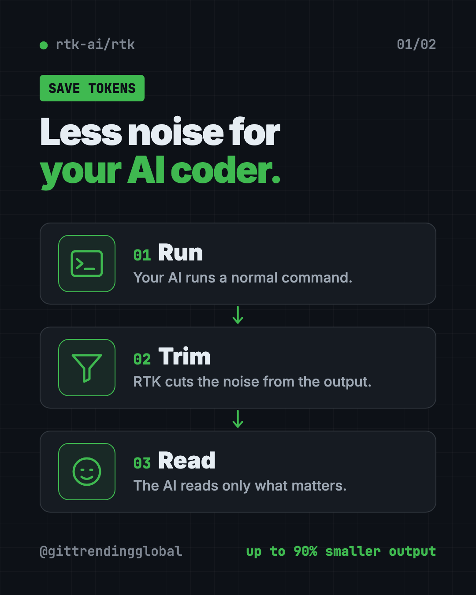
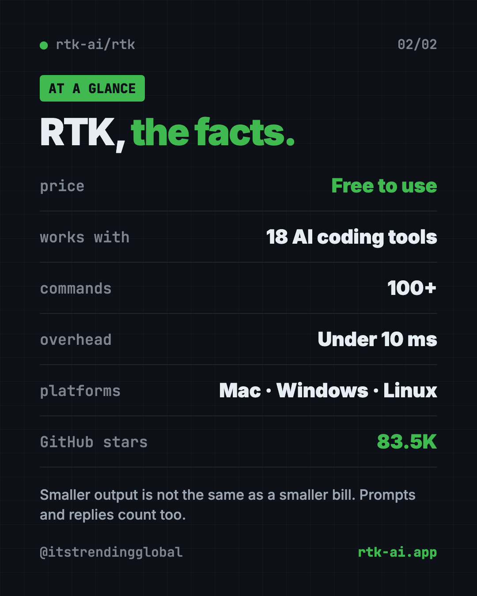

Cut Terminal Output Tokens for AI Coding: RTK Guide (2026)
- Published 15 Oct 2026
- Updated 17 Oct 2026
- 7 min read
- License Apache-2.0 + BUSL-1.1
- By the ITG Now team
RTK is a free tool that helps you cut terminal output tokens by shrinking command output before your AI reads it. The makers say that output gets up to 90% smaller, and it works with Claude Code, Codex, Cursor and 15 other AI coding tools.
Here's what it does in plain words, real ways to use it, the exact install steps, and a prompt that lets your AI helper set it up.
Key takeaways
- Free to use. The README says production use is free.
- Cuts the noise. It trims long command results, like test runs and file lists, down to what matters.
- Works with 18 AI coding tools, including Claude Code, Codex, Cursor, Copilot and Gemini CLI.
- You don't change how you work. Your AI keeps typing normal commands. RTK quietly rewrites them.
- Honest numbers. The README explains that smaller output doesn't mean your whole bill drops by the same amount.
What is RTK?
AI coding helpers like Claude Code do a lot of work by running commands on your computer. Each command prints text. The AI reads every word.
Much of that text is noise. A test run can list hundreds of passing tests just to tell you two failed. A file list can print one line per file.
AI companies charge by tokens, which are small chunks of text the AI reads or writes. And an AI can only hold so much text in mind at once. So noise costs you money and crowds out what matters.
RTK sits in the middle. The README says it "filters and compresses command outputs before they reach your LLM context." LLM just means the AI model. It's a single small program with "<10ms overhead," so you won't notice any slowdown.
The project has about 83.5K stars on GitHub. Stars work like bookmarks, so it's one of the most watched tools in this space.

How does RTK cut token use?
RTK uses four simple tricks, depending on the command:
- Smart filtering. It removes comments, blank space and boilerplate.
- Grouping. It bundles similar things, like files by folder or errors by type.
- Trimming. It keeps the useful part and cuts repeats.
- De-duplicating. It folds repeated log lines into one line with a count.
A few real examples from the README:
| When your AI runs... | RTK gives it... |
|---|---|
| A file list | A tree with file counts, not one line per file |
| A test run | Only the failures, with passing tests as a count |
git log |
Just the ID, author and title of each change |
git push |
One confirmation line instead of progress spam |
docker ps |
Only the essential fields |
It covers 100+ commands across Git, JavaScript, Python, Go, Docker, Kubernetes, AWS and more.
⚠️ Heads up: RTK only works on commands your AI runs through the terminal (the Bash tool). Claude Code's built-in Read, Grep and Glob tools don't pass through it.
How to use RTK (real examples)
- Long test runs. Your AI runs the tests and only sees the two that failed, not the 400 that passed.
- Big projects. File lists come back as a neat tree, so the AI doesn't burn tokens on thousands of lines.
- Git work. Commits and pushes return a one-line "done" instead of a wall of progress text.
- Longer sessions. Less noise means your AI can work longer before it runs out of room to think.
- Tracking savings. Run
rtk gainto see how much output RTK saved you, with a 30-day graph.
Is RTK free?
Yes, for using it. The README says "Production use is free, engine and daemon included."
The licensing has two parts. The main command tool is Apache-2.0, a common open source license. One piece inside, the compression engine, uses BUSL-1.1. That license lets you use it freely but stops others from selling RTK as their own product. If you want only the Apache-2.0 part, there's an "oss" edition too.
💡 Tip: RTK sends no usage data unless you turn it on. The README says telemetry is "off by default" and never includes your commands or files.
RTK at a glance
| Price | Free to use |
| Works offline | Yes, it runs on your computer |
| Platforms | Mac, Windows, Linux |
| License | Apache-2.0 + BUSL-1.1 (an Apache-only edition exists) |
| Works with | 18 AI coding tools, including Claude Code, Codex and Cursor |
| Latest version | 1.0.1 (October 14, 2026) |
| Best for | Anyone who uses an AI coding helper every day |

How to install RTK
These steps come straight from the RTK README. Open Terminal on Mac or Linux, or PowerShell on Windows.
On Mac or Linux with Homebrew (a free app installer), copy and paste this:
brew install rtk
On Windows, copy and paste this:
winget install rtk-ai.rtk
Or use the install script on Mac or Linux:
curl -fsSL https://raw.githubusercontent.com/rtk-ai/rtk/refs/heads/master/install.sh | sh
Next, check you got the right one. Another project called "rtk" exists, so this matters. Copy and paste this:
rtk --version
rtk gain
rtk gain must show a savings dashboard, not "command not found."
Connect RTK to your AI tool
For Claude Code, copy and paste this:
rtk init -g
For Codex, use this instead:
rtk init -g --codex
For Cursor, use this:
rtk init -g --agent cursor
Then restart your AI tool. From now on, when it runs git status, RTK rewrites it to rtk git status behind the scenes. Your AI doesn't need to know RTK is there.
⚠️ Heads up: The README is clear that RTK shrinks command output, which is only one part of what you pay for. Your prompt, chat history and the AI's replies also count. So expect real savings, but not a 90% smaller bill.
Let Claude or Codex set it up for you
Claude Code and OpenAI Codex are AI coding helpers that can run setup steps on your computer. You paste a request, it does the steps, and you approve each one.
Copy and paste this:
Please install RTK (github.com/rtk-ai/rtk) to reduce my token usage.
1. Check if I'm on Mac, Windows or Linux, and if Homebrew or winget is available.
2. Install RTK using the official command from the README.
3. Run "rtk --version" and "rtk gain" to make sure it's the right RTK.
4. Run the right "rtk init" command for the AI tool I'm using now.
5. Explain each step in plain words before you run it, and tell me to restart you at the end.
Then try asking:
Run "rtk gain --graph" and explain my token savings in plain words.
Run "rtk discover" and tell me which commands could save me more tokens.
Show me how to run one command without RTK filtering, in case I need the full output.
Our take
If you use an AI coding helper every day, RTK is one of the easiest wins out there. You set it up once, and it keeps working in the background.
What we like:
- Free to use, with a clear explanation of the license.
- Works with almost every popular AI coding tool.
- No change to how you or your AI work.
rtk gainshows your savings, so you're not guessing.- Telemetry is off unless you turn it on.
What to watch for:
- It only filters terminal commands, not built-in file tools.
- Savings on your total bill are smaller than the headline "up to 90%."
- The token counts it shows are estimates. The README says the percentages are reliable, but the totals are approximate.
- The two-license setup takes a minute to understand.
Want to cut costs even more? Read our Caveman guide to make your AI talk less. Headroom also shrinks your token bill, and CodeGraph helps your AI find the right code in one step.
FAQ
Does RTK really cut terminal output tokens?
Yes. RTK shrinks the command output Claude Code reads, which lowers the tokens it uses. Your total bill drops by less, since output is only part of what you pay for.
Is RTK free?
Yes. The README says production use is free, including the engine and the optional proxy. You only need permission to sell RTK as a product.
Does RTK work with Codex and Cursor?
Yes. RTK supports 18 AI coding tools, including Codex, Cursor, GitHub Copilot, Gemini CLI and Windsurf. Each has its own rtk init command.
Will RTK break Claude's prompt cache?
No. The README says RTK filters each output once, and the result is cached normally after that.
How do I see how much RTK saved me?
Run rtk gain in your terminal. Add --graph for a 30-day chart or --daily for a day-by-day list.
Get RTK: github.com/rtk-ai/rtk
More free coding tools
- Hindsight Hindsight is free, open-source AI agent memory. It helps AI helpers remember past chats and learn from them. Works with Claude Code, Codex and 60+ tools.
- Ponytail Skill The Ponytail skill is one free prompt that makes your AI coding helper reuse what exists, write half the code, and still keep the tests and safety checks.
- Understand Anything Understand Anything is a free plugin that lets you visualize any codebase as a clickable map with plain-English notes, guided tours and a chat for questions.
- Matt Pocock Skills Matt Pocock skills are free add-ons that make Claude Code, Codex and Copilot ask better questions, test their work and keep your code tidy.
- CodeGraph for Claude Code CodeGraph for Claude Code builds a local map of your code, so your AI helper finds the right files in one step. Free, MIT licensed, runs on your computer.
- Karpathy Skills for Claude Code Karpathy skills for Claude Code is one free rules file that makes your AI coder ask first, keep code simple and only change what you asked for.
Latest AI news
- Meta gives away its big Muse Spark AI for free
- Otter.ai raises $320M from General Catalyst
- OpenAI's GPT-6.1 Terra spotted in Microsoft code
- DeepSeek open-sources DeepInfer, the engine behind its servers
Keep reading

REA: Reverse Engineer Anything With Your AI Agent
REA (Reverse Engineer Anything) lets an AI agent look inside an app and explain how a feature works, with proof. What it does, what it misses, and the risks.

DBX: Free Database Client for 100+ Databases, With AI
DBX is a free database client that opens 100+ kinds of databases in a 25 MB app. Its AI helper turns plain English into database queries for you.

PureMac: Free CleanMyMac Alternative, No Subscription
PureMac is a free CleanMyMac alternative. It clears junk, fully uninstalls apps and finds duplicates, with no subscription, no tracking and no scare tactics.